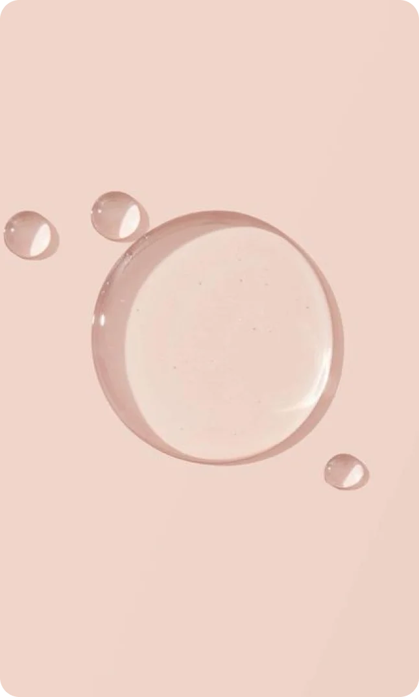
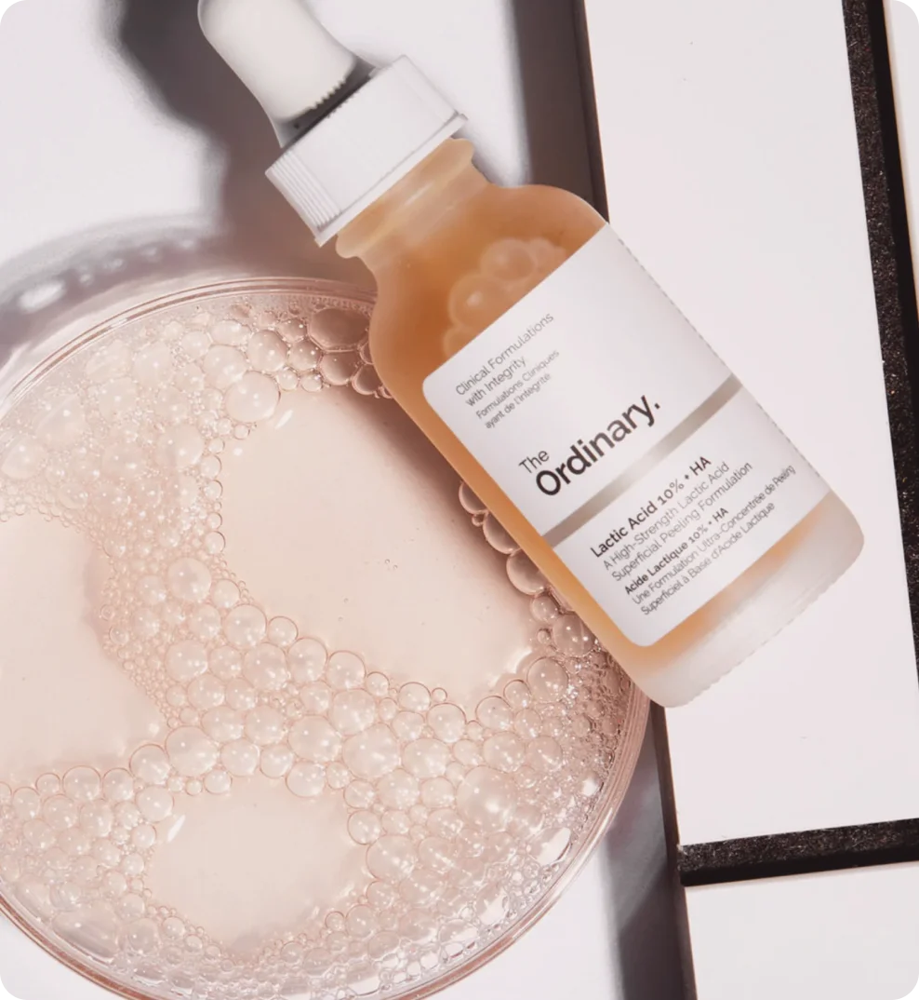

18 марта 2024
вещества
Молочная кислота относится к альфагидрокислотам (aha-кислотам). Этот компонент производится естественным путем из молока, фруктов и сахара и широко используется в различных косметических продуктах. Предлагаем разобраться, как она действует на кожу и кому подойдет.
Описание
В отличие от других aha-кислот молочная кислота считается самой щадящей и по этой причине более универсальной. Она обладает мягким, но эффективным действием на кожу. Регулярное применение средств с этим компонентом в составе способствует улучшению текстуры кожи, выравниванию тонуса и снижению видимых признаков старения. Молочная кислота способствует удалению ороговевших клеток, очищает и сужает поры, стимулирует обновление кожи, улучшает ее текстуру и цвет, замедляет появление возрастных морщин.
Обозначение в составе
В составах уходовых косметических средств молочная кислота записывается как Lactic Acid.
 
Где содержится
Молочная кислота — популярный ингредиент, и она используется в различных косметических продуктах, таких как пилинги, тоники, кремы и маски. Концентрация молочной кислоты в каждой категории отличается. Самую высокую можно встретить в салонных пилингах — до 20%. Для большинства домашних средств этот показатель не превышает 5%, но и при таком количестве кислоты эффект со временем становится очевидным.
Применение
При выборе продуктов с молочной кислотой важно обращать внимание на их концентрацию и сочетаемость с другими ингредиентами, а также следовать инструкциям по применению для достижения максимального эффекта.
Использование молочной кислоты очень важно для возрастной кожи, поскольку молочная кислота помогает ей быстрее обновляться.
Молочная кислота удерживает влагу и распределяет ее по разным слоям эпидермиса, поэтому очень хорошо подойдет обладателям сухой кожи. Для сухой кожи рекомендуется использовать продукты с молочной кислотой в виде увлажняющих кремов или масок, которые помогут улучшить уровень увлажненности и сделают кожу более мягкой и гладкой.
Для жирной и комбинированной кожи молочная кислота тоже будет полезна. Она поможет удалить излишки себума и наладить работу сальных желёз. Кроме того, молочная кислота борется с гиперкератозом и помогает очитсить поры, предотвращает появление комедонов и сальных пробок.
Людям с чувствительной кожей рекомендуется выбирать средства с молочной кислотой в концентрации менее 20%. Такие средства направлены на мягкое очищение и осветление кожи, а также на ее увлажнение.